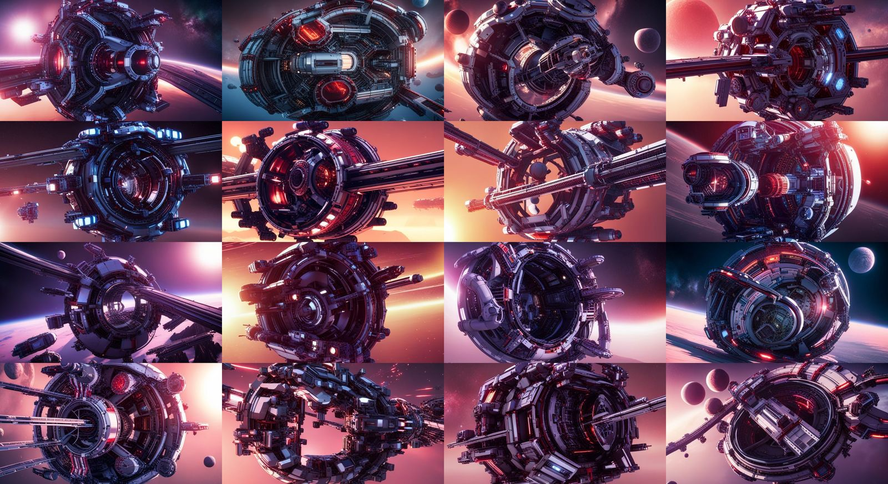

КАНАЛ «ЗАРЯ» ● ОТКРЫТ
СОЮЗ НЕ РАСПАЛСЯ.
ОН СКОМПИЛИРОВАЛСЯ ЗАНОВО.
Альтернативная история СССР в 2077 году: нейросети в Госплане, города на Луне, 15 республик в одной сети «Господарство». Добро пожаловать на государственный терминал.
Быстрый проход
Сводка ТАСС · сегодня
- Космос: станция «Заря-7» вышла на марсианскую орбиту — стыковка с Новым Востоком через 14 часов.
- Экономика: пятилетка «Синтез-9» выполнена на 114% — рекорд Госплана-Нейро.
- Быт: норма кавиара поднята до 40 г/сут для граждан старше 70 лет.
- Культура: в «Космосе» идёт реставрация «Планеты бурь» в 4K — билеты по жетонам.
ЛОР СОЮЗА-2077
Полная хроника вселенной, где СССР не распался, а перешёл на цифровую партию, орбитальные города и план, который считает машина. Читается за чаем «Крепкий дух».
В 1991 году история разошлась не с грохотом, а с щелчком мыши. Вместо путча — электронный референдум, вместо распада — новая редакция Конституции, написанная руками инженеров и профессоров. Союз сохранился, но стал другим: плановое хозяйство получил компилятор, партия — открытый репозиторий, республики — право вето в Киберсовете.
К 2077 году это цивилизация, где кибернетика — государственная религия, космонавтика — обычная профессия, а гражданин получает «Рабочий Профиль» ещё до рождения. На Марсе стоит город Новый Восток, на Луне — полтора миллиона человек, а в Гагаринске ракеты видно из космоса невооружённым глазом.
Ниже — ключевые эпохи, от Октября до сегодняшнего дня, и главные силы, которые держат машину истории в движении.
Хроника эпох
Силы и фракции
КАРТА МИРА-2077
18 держав, свои флаги, свои идеологии. Нажмите на точку или строку списка — откроется досье страны. Красный пояс, Запад и неприсоединённые — под фильтрами.
Список держав
Досье выбранной страны
ПЕРСОНАЖИ 2077
Шесть героев альтернативного Союза. У каждого — своё фото из архива «Контур-Охраны», своя биография, свой голос. Нажмите карточку, чтобы открыть полное досье.
МАГАЗИН «ГОСТ»
Широкий ассортимент ГОСТОРГа: киберимплантаты, одежда, техника, транспорт, гастроном, книги и инструмент. У каждого товара — своё фото, подробное описание и характеристики по ГОСТ-2077.
Правила ГОСТОРГа
Возврат — 14 суток без объяснений, кроме имплантатов (только при заводском браке). Курьер «Ласточка» доставляет по трём столицам за 2 часа; в другие города — «Ирбисом» overnight. Оформите заказ в корзине — и ждите гудка канала «Гранит».
КИБЕРТЕХНИКА
Не магазин — хранилище знаний. Десять ключевых технологий Союза-2077: что это, откуда взялось и почему без этого не работает ни завод, ни Госплан, ни вы.
ГАЗЕТА «ПРАВДА-2077»
Первая полоса Союза. Шесть свежих выпусков: экономика, космос, рынок, культура. Нажмите на статью — откроется «бумажный» разворот.
РАДИО «МАЯК-77»
Главный приёмник Союза. Включите питание, выберите передачу — равномощник покажет сигнал. Плеер «Радиотехника Н-3» продаётся в магазине.
КИНОТЕАТР «КОСМОС»
Афиша месяца: от отреставрированной классики до документалистики, снятой на орбите. Билет — электронный, вход по жетону.
БИБЛИОТЕКА
Восемь книг, без которых не понять эпоху: мемуары маршала, труд по нейроэкономике, антология кодеров и кулинарный сборник заводских столовых.
АРХИВ КОНТУР-ОХРАНЫ
Пять дел, которые когда-то были красными, а теперь — открыты для граждан. Раскройте дело: штамп расскажет, чем всё кончилось.
КУХНЯ СОЮЗА
Шесть рецептов, которые держали на плаву и цех, и орбитальную станцию. Откройте блюдо — внутри состав и философия.
ТРАНСПОРТ
От трамвая без водителя до марсианского лайнера: шесть машин, на которых держится движение Союза. Часть моделей — в магазине «ГОСТ».
КОСМОС СССР
От «Востока» до «Зари-7» у Марса: хронология космической программы, которая в этой вселенной никогда не останавливалась.

НАУКА И ЛАБОРАТОРИИ
Шесть институтов, которые кормят Союз идеями, и шесть изобретений, из-за которых Запад в 2047-м закрыл свои границы для литографий.
Лаборатории страны
Изобретения десятилетия
ИГРОТЕРМИНАЛ
«ГАДЮКА-8» — школьный стандарт Союза с 2049 года. Собирайте звёзды, расти змеёй, попадайте в таблицу чести завода. Управление: стрелки, WASD или свайп.
ГАДЮКА-8
Первая «звёздная» версия: вместо яблока — пятиконечная звезда, вместо ящика — зелёный контур «Госкомспорта». Каждые 10 очков — новый ранг: от «Ученика ТУ-8» до «Мастера Союза».
Рекорд сохраняется в памяти терминала (localStorage). Если змея погибнет — просто нажмите пробел: Госкомспорт не считает это поражением, а «анализом».
Ранги
0 очков — Ученик ТУ-8 · 50 — Бригадир-новичок · 150 — Кандидат в мастера · 300 — Мастер Союза · 500 — Легенда «Завода-77»
ТЕРМИНАЛ ГОСТЕРМИНАЛ/77
Черный экран, зелёный текст, никакой мыши. Напишите помощь — система сама расскажет, что умеет. Есть команда секрет…
РАБОЧИЙ ПРОФИЛЬ
Официальное удостоверение гражданина Союза. Заполните поля — карта пересоберётся в реальном времени: номер, штрих-матрица, штамп Киберсовета.
ПОГОДА И КИСЛОРОД
Шесть городов и два негорода: от московской мглы до вакуума Луноход-Града. Индекс кислорода — норма для лёгких гражданина Союза.
КУРС РУБЛЯ
Официальные котировки Госбанка Союза на 23 сентября 2077 года. Базовая единица — советский рубль, обеспеченный золотом и трудоднями.
| Единица | Тип | Курс | 24 ч | Примечание |
|---|
Из кассовой справки
Обмен валюты — в отделениях Госбанка при наличии паспорта и улыбки кассира. Торговый лимит по доллару: 300 $ в месяц. «Гранит» контура не обменивается наружу — внутренний расчётный бит Господарства.
ДОСКА ПОЧЁТА
Герои года по итогам Госплана, Госкосмоса и народного голосования «Рабочих Профилей». Золотая пластина в холле «Дома Союза».
| № | Имя | Звание | Подвиг / вклад | Год |
|---|
СВЯЗЬ С ЦЕНТРОМ
Письма в Центр, вопросы в редакцию, жалобы на протез, предложения по плану. Форма работает без сервера — но настроение поднимает.
РЕКВИЗИТЫ ЦЕНТРА
- АДРЕС
- Москва, Красная площадь, 1, узел «Москва-1»
- ЭФИР
- «Маяк-77», волна 100.7 УКВ · 24/7
- ТЕЛЕТАЙП
- granit@ussr2077.cp · шифр ОСК-512
- ПРИЁМ
- Пн–Сб, 09:00–18:00, обед 13:00–14:00
- ДИЗЕРТЕР
- Дед Иван — Калининград, ретранслятор-3
— девиз почтового отдела Госсвязи